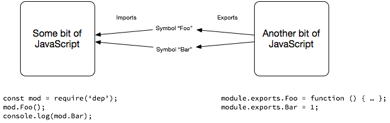
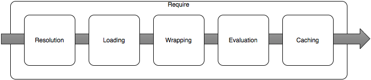
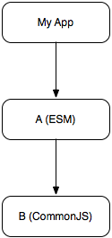
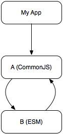
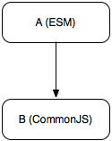

<!DOCTYPE HTML>

<html lang="en">
  
<head><meta name="generator" content="Hexo 3.8.0">
  <meta charset="utf-8">
  
  <title>Node.js, TC-39, and Modules | Kathy&#39;s Tech Blog</title>
  <meta name="author" content="Kathy Miao">
  
  <meta name="description" content="Kathy Miao的技术博客">
  
  
  <meta name="viewport" content="width=device-width, initial-scale=1, maximum-scale=1">

  <meta property="og:title" content="Node.js, TC-39, and Modules">
  <meta property="og:site_name" content="Kathy&#39;s Tech Blog">

  
    <meta property="og:image" content="undefined">
  

  
    <meta http-equiv="Content-Language" content="en">
  

  <link href="/img/favicon.png" rel="icon">
  
    <link rel="apple-touch-icon" href="/img/apple-icon.png">
    <link rel="apple-touch-icon-precomposed" href="/img/apple-icon.png">
    

  <link rel="alternate" href="/atom.xml" title="Kathy&#39;s Tech Blog" type="application/atom+xml">
  <link rel="stylesheet" href="/css/style.css" media="screen" type="text/css">
  
  <style type="text/css">
  /* Tim Pietrusky advanced checkbox hack (Android <= 4.1.2) */
body{ -webkit-animation: bugfix infinite 1s; }
@-webkit-keyframes bugfix { from {padding:0;} to {padding:0;} }

  

  
    article .post-content-index .entry{max-height: 620px; overflow:hidden;}
  
</style>

  <!--[if lt IE 9]><script src="//html5shiv.googlecode.com/svn/trunk/html5.js"></script><![endif]-->

  <script>
  (function(i,s,o,g,r,a,m){i['GoogleAnalyticsObject']=r;i[r]=i[r]||function(){
  (i[r].q=i[r].q||[]).push(arguments)},i[r].l=1*new Date();a=s.createElement(o),
  m=s.getElementsByTagName(o)[0];a.async=1;a.src=g;m.parentNode.insertBefore(a,m)
  })(window,document,'script','//www.google-analytics.com/analytics.js','ga');

  ga('create', 'null', 'auto');
  ga('send', 'pageview');
 
</script>


  
    
      <link href="http://fonts.googleapis.com/css?family=Open+Sans:300,400|Playball" rel="stylesheet" type="text/css">
    
  <link href="//maxcdn.bootstrapcdn.com/font-awesome/4.1.0/css/font-awesome.min.css" rel="stylesheet">
  <script src="http://ajax.aspnetcdn.com/ajax/jQuery/jquery-1.11.1.min.js"></script>

  


</head>
</html>

<body>
  <header id="header"><div class="padding inner">
	<div class="alignleft logo">
	  <h1><a href="/">Kathy&#39;s Tech Blog</a></h1>
	</div>
	<nav id="main-nav" class="alignright">
		<input type="checkbox" id="toggle">
		<label for="toggle" class="toggle" data-open="Main Menu" data-close="Close Menu" onclick><i class="fa fa-bars"></i></label>
	  <ul class="menu">
	    
	      <li><a href="/">Home</a></li>
	    
	      <li><a href="/archives">Archives</a></li>
	    
	    
	  </ul>
	</nav>
	<div class="clearfix"></div>
</div>
</header>
  <div id="page-heading-wrap">
  	<div class="inner">
      <div class="padding">
    		
          <h1>Node.js, TC-39, and Modules</h1>
          <ul>
            <li>
              <span class="heading-span">Posted on: </span>
              <time datetime="2017-09-05T12:06:39.000Z">2017-09-05</time>
            </li>
            
              <li>
                <span class="heading-span">By: </span>

                
                  <a href="/">Kathy Miao</a>
                

              </li>
            
            <li>
              <span class="heading-span">With: </span>
              
            </li>
          </ul>
        
      </div>
  	</div>
  </div>
  <div id="content" class="inner">
    <div id="main-col" class="alignleft"><div id="wrapper" class="padding"><article class="post">
  
  
    <div class="post-content">
  
      
      <div class="entry">
        
          <h1 id="Node-js-TC-39-and-Modules"><a href="#Node-js-TC-39-and-Modules" class="headerlink" title="Node.js, TC-39, and Modules"></a>Node.js, TC-39, and Modules</h1><p>James M Snell</p>
<p>Katherina Miao（翻译）</p>
<p><a href="https://hackernoon.com/node-js-tc-39-and-modules-a1118aecf95e" target="_blank" rel="noopener">原文链接</a></p>
<hr>
<p>本周我第一次参加了 TC-39 会议。可能有人还不知道，TC-39 是 ECMA 工作组的编号，是他们定义了 ECMAScript 语言（或者更常见的“JavaScript”）。这个工作组敲定（通常是纠结的）并通过了 JavaScript 语言的细枝末节，以确保 JavaScript 编程语言不断发展并继续满足开发人员的需求。</p>
<p>我本周参加 TC-39 会议的原因非常简单：TC-39 定义的一种较新的 JavaScript 语言 - 即模块 - 导致 Node.js 核心团队遇到了一些困扰。我们（主要是Bradley Farias - Twitter@bradleymeck）一直试图弄清楚如何以最好的方式使 Node.js 支持 ECMAScript 模块（ESM），又不会弄出乱子。</p>
<p>问题实际上并不是我们无法按照目前规范定义的方式在 Node.js 中实现 ESM，而是如果完全按照规范的要求做意味着需要减少 Node.js 预期功能，开发者只能得到次优体验。我们非常希望确保 Node.js 中的 ESM 实现最优又可用。由于这个问题比较复杂，为了得到最有效的解决方案，我们与 TC-39 成员坐下来面谈。幸运的是，我认为我们取得了一些重大进展。</p>
<p>为了能更好的解释当前的问题和我们的计划，让我花一些时间来解释一些引起了我们最关注的基本问题。</p>
<p>然而，首先说明：以下很多内容比起实际代码情况做了过分简化。这主要是为了提供概述，而不是深入讨论模块系统。</p>
<p>然后，再次说明：这里的一切都是基于我自己对 TC-39 对话的看法。完全有可能对一些细节有错误的理解，并且完全有可能在继续同 TC-39 讨论后，事情最终会与我在此描述的内容大不相同。我写这篇文章只是为了记录正在讨论的内容。</p>
<h2 id="ECMAScript模块与CommonJS：或者……什么是模块？"><a href="#ECMAScript模块与CommonJS：或者……什么是模块？" class="headerlink" title="ECMAScript模块与CommonJS：或者……什么是模块？"></a>ECMAScript模块与CommonJS：或者……什么是模块？</h2><p><br>事实证明，Node.js 和 TC-39 对“模块”是什么，如何定义以及如何将它们加载到内存和使用中，有着截然不同的想法。</p>
<p>几乎从开始，Node.js 就有了一套模块系统，源自相当松散定义的规范“CommonJS”。</p>
<p></p>
<p>简单来说，是由一个 JavaScript 文件（诸如函数和变量）导出的标识以供另一个JavaScript 文件使用。 在 Node.js 中使用<code>require()</code>函数完成的加载。当在 Node.js中调用<code>require(“foo”)</code>时，会执行以下特定的步骤。</p>
<p></p>
<p>第一步是将标识“foo”解析为指向 Node.js 可识别的内容的绝对文件路径。此解析过程涉及多个内部步骤，本质上是遍历本地文件系统去匹配原生模块（Node.js 自带模块），JavaScript文件或JSON文档。解析步骤的结果是一个绝对文件路径，“foo”指向的内容可以从该文件路径加载到 Node.js 中并使用。</p>
<p>加载完全取决于解析步骤生成的绝对文件路径指向的内容。例如，如果解析路径指向的内容是 Node.js 原生模块，则加载过程会将引用共享库动态关联到当前 Node.js 进程。如果指向的是 JSON 文件或 JavaScript 文件，则在验证文件存在后，文件的内容将被读入内存。值得注意的是，JavaScript Loading（加载）与 JavaScript Evaluating（执行）不同。 前者严格处理将文件的字符串内容拉入内存，而后者处理将该字符串传递给 JavaScript VM 进行解析和执行。</p>
<p>如果加载的内容是 JavaScript 文件，目前的 Node.js 会假定该文件是 CommonJS 模块。接下来的行为是至关重要的，并且经常被应用 Node.js 的开发者误解。在将加载的 JavaScript 字符串传递给 JavaScript VM 进行执行之前，字符串会被将包装在函数内。</p>
<p>例如下面文件“foo.js”：<br><figure class="highlight js"><table><tr><td class="gutter"><pre><span class="line">1</span><br><span class="line">2</span><br></pre></td><td class="code"><pre><span class="line"><span class="keyword">const</span> m = <span class="number">1</span>;</span><br><span class="line"><span class="built_in">module</span>.exports.m = m;</span><br></pre></td></tr></table></figure></p>
<p>实际上 Node.js 会把它当作一个函数函数去执行：</p>
<figure class="highlight js"><table><tr><td class="gutter"><pre><span class="line">1</span><br><span class="line">2</span><br><span class="line">3</span><br><span class="line">4</span><br></pre></td><td class="code"><pre><span class="line"><span class="function"><span class="keyword">function</span> (<span class="params">exports, require, module, __filename, __dirname</span>) </span>&#123;</span><br><span class="line">  <span class="keyword">const</span> m = <span class="number">1</span>;</span><br><span class="line">  <span class="built_in">module</span>.exports.m = m;</span><br><span class="line">&#125;</span><br></pre></td></tr></table></figure>
<p>然后，Node.js 使用 JavaScript 运行时来执行此函数。Node.js 模块中常用的各种“global”变量（如“exports”，“module”，“_ _ filename”和“__dirname”）不是传统 JavaScript 意义上的实际全局变量。相反，它们是函数参数，当调用函数时，它们的值由 Node.js 提供给包装函数。</p>
<p>这个包装函数本质上是一个<em>工厂</em>方法。exports 对象是标准的 JavaScript 对象。包装函数将函数和属性赋值到该 exports 对象。一旦包装函数返回，则 exports 对象被缓存，然后作为<code>require()</code>方法的返回值返回。</p>
<p>我们这次讨论需要理解的关键概念是，在执行包装函数之前，无法预先确定 CommonJS 模块将导出哪些标识。</p>
<p>这是 CommonJS 模块和 ECMAScript 模块之间的关键区别。CommonJS 模块是在执行包装函数时动态的定义了模块的 exports 对象，而 ESM 的导出是在<em>词法</em>上定义的。也就是说，ESM 导出的标识是 JavaScript 代码在实际执行之前，通过<em>解析</em>时得到的。</p>
<p>例如下面这个简单的ECMAScript模块：</p>
<figure class="highlight js"><table><tr><td class="gutter"><pre><span class="line">1</span><br></pre></td><td class="code"><pre><span class="line"><span class="keyword">export</span> <span class="keyword">const</span> m = <span class="number">1</span>;</span><br></pre></td></tr></table></figure>
<p>这段代码在执行之前<em>解析</em>完成时，会创建一个名为 Module Record（模块记录）的内部结构。在此模块记录中记录了许多关键信息，包括模块导出标识的<em>静态</em>列表。这些关键字是由解析器查找 export 关键字识别出的。由于缺少更好的描述术语，模块记录中的标识基本上是指向尚不存在的事物的<em>指针</em>。仅在构建此模块记录之后才实际执行模块代码。虽然这里的许多细节我还没有描述清楚，但关键的是在执行<em>之前</em>就确定了 ESM 所导出的标识。</p>
<p>使用ECMAScript模块时使用 import 语句：</p>
<figure class="highlight js"><table><tr><td class="gutter"><pre><span class="line">1</span><br></pre></td><td class="code"><pre><span class="line"><span class="keyword">import</span> &#123;m&#125; <span class="keyword">from</span> “foo”;</span><br></pre></td></tr></table></figure>
<p>这段代码基本上说，「我将使用模块“foo”导出的“m”标识」。</p>
<p>此语句是一个<em>词法</em>语句，用于在<em>解析</em>代码时在导入脚本和“foo”模块之间建立关联。编写 ECMAScript 模块规范的方式，必须在执行任何代码之前验证关联 - 这意味着实现必须在两个 JavaScript 文件执行前确保标识“m”正由“foo”导出。</p>
<p>对于熟悉强类型面向对象编程语言（如Java或C ++）的人来说，这应该很容易熟悉，因为它类似于通过接口处理对象。导出的标识在执行前进行验证和关联，如果在执行步骤中标识实际上未满足，则会抛出错误。</p>
<p>对于 Node.js，挑战在于，当“foo”不是具有词汇定义的导出集的 ESM，而是具有动态定义的导出集的 CommonJS 模块时。具体来说：当我<code>import {m} from &quot;foo&quot;</code>时，ESM 目前要求在执行之前确定 m 由“foo”导出; 但正如我们已经看到的那样，由于“foo”是一个 CommonJS 模块，因此直到执行之后才能确定 m 被导出。最终结果是，从 CommonJS 模块的具名导入和导出这个 ECMAScript 模块的一个至关重要的特性，在当前定义的 ESM 规范下是不可能实现的。</p>
<p>这不是特别理想，因此我们（Node.js人员）回到 TC-39 询问是否可以在规范中进行一些更改。起初，我们有点不太好意思询问。然而事实证明，TC-39 非常关心 Node.js 能否够有效地实现 ESM，并且为了在 Node.js 环境中更好的运行，正在对规范进行一些更改。</p>
<h2 id="操作顺序"><a href="#操作顺序" class="headerlink" title="操作顺序"></a>操作顺序</h2><p>我们提出的一个具体改动是考虑动态定义的模块。基本上，当我<code>import {m} from &quot;foo&quot;</code>时，发现 “foo”不是具有<em>词法</em>定义导出的 ESM，比起抛出错误并结束进程（这是规范当前所做的），将“foo”和导入脚本放入一种中间挂起状态，推迟对导入标识的验证，直到可以执行动态模块的代码。执行后，可以完成 CommonJS 模块的 Module Record（模块记录）并验证导入关联。对 ECMAScript 模块标准的这项修改可以使 CommonJS 模块的具名导出和导入正常运行（尽管有一些关于循环依赖边缘情况的问题）。</p>
<p>让我们来看几个例子。</p>
<p>我有一个依赖于 ESM A 的应用程序，A 又依赖于 CommonJS 模块 B。</p>
<p></p>
<p>我的应用（myapp.js）的代码：</p>
<figure class="highlight js"><table><tr><td class="gutter"><pre><span class="line">1</span><br><span class="line">2</span><br></pre></td><td class="code"><pre><span class="line"><span class="keyword">const</span> foo = <span class="built_in">require</span>(<span class="string">'A'</span>).default</span><br><span class="line">foo()</span><br></pre></td></tr></table></figure>
<p>A的代码：</p>
<figure class="highlight js"><table><tr><td class="gutter"><pre><span class="line">1</span><br><span class="line">2</span><br><span class="line">3</span><br><span class="line">4</span><br></pre></td><td class="code"><pre><span class="line"><span class="keyword">import</span> &#123;log&#125; <span class="keyword">from</span> <span class="string">"B"</span></span><br><span class="line"><span class="keyword">export</span> <span class="keyword">default</span> <span class="function"><span class="keyword">function</span>(<span class="params"></span>) </span>&#123;</span><br><span class="line">  log(<span class="string">'hello world'</span>)</span><br><span class="line">&#125;</span><br></pre></td></tr></table></figure>
<p>B的代码：<br><figure class="highlight js"><table><tr><td class="gutter"><pre><span class="line">1</span><br><span class="line">2</span><br><span class="line">3</span><br></pre></td><td class="code"><pre><span class="line"><span class="built_in">module</span>.exports.log = <span class="function"><span class="keyword">function</span>(<span class="params">msg</span>) </span>&#123;</span><br><span class="line">  <span class="built_in">console</span>.log(msg);</span><br><span class="line">&#125;</span><br></pre></td></tr></table></figure></p>
<p>当我运行<code>node myapp.js</code>时，对<code>require(&#39;A&#39;)</code>的调用将检测到正在加载的东西是 ESM（参见下面有关了解如何进行此检测）。Node.js 不会使用当前用于 CommonJS 模块的包装函数加载模块，而是使用 ECMAScript 模块规范来解析，初始化和执行“A”。当解析“A”的代码并创建模块记录时，它将检测到“B”不是 ESM，因此验证由“B”导出的步骤将处于挂起状态。然后，ESM 加载程序将开始执行阶段。首先将会使用现有的 CommonJS 包装函数来执行B，其结果将被传递回 ESM 加载程序以完成模块记录的构建。其次，它将使用完成的模块记录执行“A”的代码。</p>
<p>如何切换依赖项的顺序。 假设 A 是 CommonJS 而 B 是 ESM。在这里，不需要额外的特殊操作，因为如上例所示，可以<code>require()</code>一个ESM。</p>
<p>对于绝大多数基本用例，此加载模型应该可以正常工作。但当模块之间存在依赖循环时就变得有些棘手。任何使用过具有循环依赖关系的 CommonJS 模块的人都知道，根据加载这些模块的顺序，有一些相当奇怪的边缘情况会逐渐增加。在 CommonJS 模块和 ESM 之间存在依赖循环的情况下，将存在许多相同类型的问题。</p>
<p></p>
<p>myapp.js 的代码与上面的保持一致。但是，A 依赖 B，而 B 又依赖 A。</p>
<p>A的代码：</p>
<figure class="highlight js"><table><tr><td class="gutter"><pre><span class="line">1</span><br><span class="line">2</span><br><span class="line">3</span><br></pre></td><td class="code"><pre><span class="line"><span class="keyword">const</span> b = <span class="built_in">require</span>(<span class="string">'B'</span>)</span><br><span class="line">exports.b = b.foo()</span><br><span class="line">exports.a = <span class="number">1</span></span><br></pre></td></tr></table></figure>
<p>B的代码：<br><figure class="highlight js"><table><tr><td class="gutter"><pre><span class="line">1</span><br><span class="line">2</span><br></pre></td><td class="code"><pre><span class="line"><span class="keyword">import</span> &#123;a&#125; <span class="keyword">from</span> <span class="string">"A"</span></span><br><span class="line"><span class="keyword">export</span> <span class="keyword">const</span> foo () =&gt; a</span><br></pre></td></tr></table></figure></p>
<p>为了说明这个问题我们使用了非常刻意的例子。这种类型的循环非常难以实现，因为关联和执行ESM“B”时，标识“a”尚未被 CommonJS 模块“A”定义和输出。这类实例不得不被视作参考错误。</p>
<p>但是，如果我们将B的代码更改为：</p>
<figure class="highlight js"><table><tr><td class="gutter"><pre><span class="line">1</span><br><span class="line">2</span><br></pre></td><td class="code"><pre><span class="line"><span class="keyword">import</span> A <span class="keyword">from</span> <span class="string">"A"</span></span><br><span class="line"><span class="keyword">export</span> foo () =&gt; A.a</span><br></pre></td></tr></table></figure>
<p>循环依赖有效，因为使用 import 语句导入 CommonJS 模块时，module.exports 对象将成为<code>default</code>导出。在这种情况下，ESM 代码关联到 CommonJS 模块的<em>默认</em>导出而不是标识。</p>
<p>更简洁地说：只有在 ESM 和 CommonJS 模块之间没有依赖循环时，来自 CommonJS 模块的具名导入才有效。</p>
<p>由 CommonJS 和 ESM 之间的差异引起的另一个限制是，在初始执行之后对 CommonJS 导出的任何变化都不能作为具名导入使用。例如，假设 ESM A 依赖于 CommonJS 模块B。</p>
<p></p>
<p>假设 B 的代码为：<br><figure class="highlight js"><table><tr><td class="gutter"><pre><span class="line">1</span><br><span class="line">2</span><br><span class="line">3</span><br></pre></td><td class="code"><pre><span class="line"><span class="built_in">module</span>.exports.foo = <span class="function"><span class="keyword">function</span>(<span class="params">name, key</span>) </span>&#123;</span><br><span class="line">  <span class="built_in">module</span>.exports[name] = key</span><br><span class="line">&#125;</span><br></pre></td></tr></table></figure></p>
<p>当“A”导入“B”时，唯一可用作具名导入的导出标识将是默认符号和“foo”。 调用 foo 函数时添加到<code>module.exports</code>的符号都不能作为具名导入使用。但是，它们可以通过默认导出获得。例如，以下内容应该可以正常工作：<br><figure class="highlight js"><table><tr><td class="gutter"><pre><span class="line">1</span><br><span class="line">2</span><br><span class="line">3</span><br><span class="line">4</span><br></pre></td><td class="code"><pre><span class="line"><span class="keyword">import</span> &#123;foo&#125; <span class="keyword">from</span> <span class="string">"B"</span></span><br><span class="line"><span class="keyword">import</span> B <span class="keyword">from</span> <span class="string">"B"</span></span><br><span class="line">foo(<span class="string">"abc"</span>, <span class="number">123</span>)</span><br><span class="line"><span class="keyword">if</span> (B.abc === <span class="number">123</span>) &#123; <span class="comment">/** ... **/</span> &#125;</span><br></pre></td></tr></table></figure></p>
<h2 id="require-vs-import"><a href="#require-vs-import" class="headerlink" title="require() vs import"></a>require() vs import</h2><p>关于 require() 和 import 有一个非常清楚的区别：虽然可以使用<code>require()</code>加载 ESM，并且可以使用 import 导入 CommonJS 模块，但是不可能在 CommonJS 模块中使用 import 语句; 默认情况下，ESM 中将不支持 require()。</p>
<p>换句话说，如果我有一个 CommonJS 模块A，则无法使用以下代码，因为 import 语句将无法在 CommonJS 中使用：</p>
<figure class="highlight js"><table><tr><td class="gutter"><pre><span class="line">1</span><br><span class="line">2</span><br></pre></td><td class="code"><pre><span class="line"><span class="keyword">const</span> b = <span class="built_in">require</span>(<span class="string">'B'</span>)</span><br><span class="line"><span class="keyword">import</span> c <span class="keyword">from</span> <span class="string">"C"</span></span><br></pre></td></tr></table></figure>
<p>如果您在 CommonJS 模块中操作，加载和使用 ESM 的正确方法是使用 require：<br><figure class="highlight js"><table><tr><td class="gutter"><pre><span class="line">1</span><br><span class="line">2</span><br></pre></td><td class="code"><pre><span class="line"><span class="keyword">const</span> b = <span class="built_in">require</span>(<span class="string">'B'</span>)</span><br><span class="line"><span class="keyword">const</span> c = <span class="built_in">require</span>(<span class="string">'C'</span>)</span><br></pre></td></tr></table></figure></p>
<p>在 ESM 中，只有在特地导入 require 的情况下，<code>require()</code>才可用且可用。用于导入 require 的确切声明尚未确定，但基本上它将是这样的：<br><figure class="highlight js"><table><tr><td class="gutter"><pre><span class="line">1</span><br><span class="line">2</span><br></pre></td><td class="code"><pre><span class="line"><span class="keyword">import</span> &#123;<span class="built_in">require</span>&#125; <span class="keyword">from</span> <span class="string">"nodejs"</span></span><br><span class="line"><span class="built_in">require</span>(<span class="string">"foo"</span>)</span><br></pre></td></tr></table></figure></p>
<p>但是，因为可以直接从 CommonJS 模块导入，所以应该没有太多理由这样做。</p>
<p>除此之外：Node.js 人员有许多其他问题，例如 ESM 的加载是否<em>必须</em>是异步的，这需要在整个依赖过程中使用 Promise。TC-39 向我们保证（以及允许上述变更）加载不必是异步的。这是一个好消息。</p>
<h2 id="关于-import"><a href="#关于-import" class="headerlink" title="关于 import()"></a>关于 import()</h2><p>我们给 TC-39 提出了一个引入一个新的<code>import()</code>函数提议。这与上面示例中显示的import语句明显不同。请考虑下面的例子：</p>
<figure class="highlight js"><table><tr><td class="gutter"><pre><span class="line">1</span><br><span class="line">2</span><br></pre></td><td class="code"><pre><span class="line"><span class="keyword">import</span> &#123;foo&#125; <span class="keyword">from</span> <span class="string">"bar"</span></span><br><span class="line"><span class="keyword">import</span>(<span class="string">"baz"</span>).then(<span class="function">(<span class="params"><span class="built_in">module</span></span>)=&gt;</span>&#123;<span class="comment">/*…*/</span>&#125;).catch(<span class="function">(<span class="params">err</span>)=&gt;</span>&#123;<span class="comment">/**…*/</span>&#125;)</span><br></pre></td></tr></table></figure>
<p>第一个导入语句是词法。如前所述，在<em>解析</em>代码时会对其进行处理和验证。另一方面，import() 函数在执行时处理。它还导入 ESM（或CommonJS模块），但是与目前 Node.js 的 require() 方法一样，在执行阶段完成处理。 然而，与 require() 不同，import() 返回一个 Promise，允许（但不强制）底层模块的加载完全异步执行。</p>
<p>因为 import() 函数返回一个 Promise，所以可以使用<code>await import(&quot;foo&quot;)</code>之类的东西。 但是，重要的是要注意，在 TC-39中，import() 远未完成，尚未成熟。现在完全不确定 Node.js 是否能够使用 import() 函数实现完全异步加载。</p>
<h2 id="是CommonJS-还是-ESM-的检测"><a href="#是CommonJS-还是-ESM-的检测" class="headerlink" title="是CommonJS 还是 ESM 的检测"></a>是CommonJS 还是 ESM 的检测</h2><p>无论代码是否使用 require()，import 或 import() 来加载模块，都需要先检测以什么方式导入，以便Node.js 可以以适当的方式加载和处理它。</p>
<p>传统上，require() 函数的 Node.js 实现依赖于文件扩展名来区分如何加载不同类型的内容。例如，<em>.node 文件作为本机模块加载，</em>.json 文件只是通过 JSON.parse 传递，*.js 文件作为 CommonJS 模块处理。</p>
<p>随着 ESM 的引入，需要一种机制来区分 CommonJS 模块和 ESM。下面建议几种方法。</p>
<p>一个方案是确保可以将 JavaScript 文件非常明确地解析为 ESM 或其他内容。换句话说，当我解析一些JavaScript 时，它是否是一个 ESM 应该在解析结果中明确可知。这种方法被称为“明确的语法”。不幸的是，它可能会显得有点棘手。</p>
<p>另一个已经考虑的提议是向 package.json 文件添加 meta 元数据中。如果 package.json 文件中有某个特定值，则该模块将作为 ESM 而不是 CommonJS 模块加载。</p>
<p>第三个提议是使用新的文件扩展名（*.mjs）来标识 ECMAScript 模块。这种方法与 Node.js 目前的做法最接近。</p>
<p>例如，假设我有一个应用程序脚本 myapp.js 和一个单独文件中定义的 ESM 模块。</p>
<p>使用明确的语法方法，Node.js 应该能够解析第二个文件中的 JavaScript 并自动确定这是一个 ESM。使用这种方法，ESM 文件可以使用 *.js 文件扩展名，就可以正常运行了。然而，正如我所说，这种方法很难正确的使用，并且存在许多难以实现的边缘情况。</p>
<p>使用 package.json 方法，ESM 要么必须捆绑在它自己的目录中（本质上是它自己的包），要么根目录中必须有一个 package.json，它包含一些元数据，表明 JavaScript 包含在一个 ESM 文件中，或者说就是一个 ESM。由于需要对 package.json 进行额外处理，因此这种方法不太理想。</p>
<p>使用 <em>.mjs 文件扩展方法，ESM 代码被放入像 foo.mjs 这样的文件中。在 Node.js 将说明符解析为绝对文件名后，它将查看文件扩展名，就像它当前已经使用原生模块和 JSON 文件一样。如果它看到 </em>.mjs 文件扩展名时，会选择将内容作为 ESM 加载并处理。但是，如果是 *.js，它将回退并将内容作为 CommonJS 模块去加载。</p>
<p>以目前的情况来看，*.mjs 文件扩展名看起来是最可行的选项，除非所有用于明确语法的各种边缘情况都可以解决。</p>
<h2 id="幂等的担忧"><a href="#幂等的担忧" class="headerlink" title="幂等的担忧"></a>幂等的担忧</h2><p>一般来说，多次调用<code>require(&#39;foo&#39;)</code>将返回完全相同的模块实例。但是，返回的对象是可变的，模块可以通过 monkeypatching（猴子补丁）某个方法或标识来修改其他模块，或者通过完全替换功能来修改其他模块。这种类型的东西在 Node.js 生态系统中非常普遍。</p>
<p>例如，假设 myapp.js 有两个依赖项 A 和 B。这两个依赖项都是 CommonJS 模块。为了扩展功能，A 也依赖 B。</p>
<p>myapp.js 的代码：</p>
<figure class="highlight js"><table><tr><td class="gutter"><pre><span class="line">1</span><br><span class="line">2</span><br><span class="line">3</span><br></pre></td><td class="code"><pre><span class="line"><span class="keyword">const</span> A = <span class="built_in">require</span>(<span class="string">'A'</span>)</span><br><span class="line"><span class="keyword">const</span> B = <span class="built_in">require</span>(<span class="string">'B'</span>)</span><br><span class="line">B.foo()</span><br></pre></td></tr></table></figure>
<p>A 的代码<br><figure class="highlight js"><table><tr><td class="gutter"><pre><span class="line">1</span><br><span class="line">2</span><br><span class="line">3</span><br><span class="line">4</span><br><span class="line">5</span><br><span class="line">6</span><br></pre></td><td class="code"><pre><span class="line"><span class="keyword">const</span> B = <span class="built_in">require</span>(‘B’)</span><br><span class="line"><span class="keyword">const</span> foo = B.foo</span><br><span class="line">B.foo = <span class="function"><span class="keyword">function</span>(<span class="params"></span>) </span>&#123;</span><br><span class="line">  <span class="built_in">console</span>.log(<span class="string">'intercepted!'</span>)</span><br><span class="line">  foo()</span><br><span class="line">&#125;</span><br></pre></td></tr></table></figure></p>
<p>B的代码<br><figure class="highlight js"><table><tr><td class="gutter"><pre><span class="line">1</span><br><span class="line">2</span><br><span class="line">3</span><br></pre></td><td class="code"><pre><span class="line"><span class="built_in">module</span>.exports.foo = <span class="function"><span class="keyword">function</span>(<span class="params"></span>) </span>&#123;</span><br><span class="line">  <span class="built_in">console</span>.log(<span class="string">'foo bar baz'</span>)</span><br><span class="line">&#125;</span><br></pre></td></tr></table></figure></p>
<p>在这种情况下，在A中调用<code>require(&#39;B&#39;)</code>返回的结果与 myapp.js 中调用的<code>require(&#39;B&#39;)</code>不同。</p>
<p>使用 ECMAScript 模块时，这种跨模块的猴子补丁并不那么容易。原因有两个：A）导入模块在执行之前完成关联，B）导入必须是幂等的 - 每次在给定的上下文中调用导入时，总是返回完全相同的不可变符号集。实际上说，这意味着当使用具名导入时，ESM A 不能轻易地猴子补丁 ESM B。</p>
<p>此规则的效果等同于 myapp.js 这样写：</p>
<figure class="highlight js"><table><tr><td class="gutter"><pre><span class="line">1</span><br><span class="line">2</span><br><span class="line">3</span><br><span class="line">4</span><br></pre></td><td class="code"><pre><span class="line"><span class="keyword">const</span> B = <span class="built_in">require</span>(<span class="string">'B'</span>)</span><br><span class="line"><span class="keyword">const</span> foo = B.foo</span><br><span class="line"><span class="keyword">const</span> A = <span class="built_in">require</span>(<span class="string">'A'</span>)</span><br><span class="line">foo()</span><br></pre></td></tr></table></figure>
<p>这里，模块 A 仍在 修改 B 模块的foo，但由于在修改之前抓取了对 foo 的引用，因此对<code>foo()</code>的调用将调用原始函数，而不是修改后的函数。在 ESM 中将无法导入 A 修改后的 B 模块返回。</p>
<p>在这种幂等规则导致问题的存在多种场景。主要的例子有模拟、APM和用于测试的间谍。幸运的是，可以通过多种方式解决此限制。一种方法是在加载阶段添加钩子，以允许包装 ESM 的导出。另一个是 TC-39 允许加载的 ESM 在加载后进行更换。这里正在考虑几种机制。好消息是，拦截 ESM 与截取 CommonJS 模块不同，这是可以实现的。</p>
<h2 id="更多的工作"><a href="#更多的工作" class="headerlink" title="更多的工作"></a>更多的工作</h2><p>还有很多额外的工作要做，不管怎么说，上面讨论的所有内容不是最终的结论。有许多细节需要解决，结果可能会看起来非常不同。重要的是 Node.js 和 TC-39 正在共同努力解决所有这些问题，朝这正确的方向迈出一步是大家都乐意看到的。</p>

        
      </div>
      <footer>
        
          
          
  
  <div class="tags">
    <a href="/tags/nodejs/">nodejs</a>, <a href="/tags/commonjs/">commonjs</a>, <a href="/tags/modules/">modules</a>
  </div>

          <div class="share">
  

    

    
      <div class="g-plusone"></div>

      <script type="text/javascript">
        window.___gcfg = {lang: 'en-GB'};

        (function() {
          var po = document.createElement('script'); po.type = 'text/javascript'; po.async = true;
          po.src = 'https://apis.google.com/js/platform.js';
          var s = document.getElementsByTagName('script')[0]; s.parentNode.insertBefore(po, s);
        })();
      </script>
    

    
      <a href="https://twitter.com/share" class="twitter-share-button" data-via="halfer53">Tweet</a>
        <script>!function(d,s,id){var js,fjs=d.getElementsByTagName(s)[0],p=/^http:/.test(d.location)?'http':'https';if(!d.getElementById(id)){js=d.createElement(s);js.id=id;js.src=p+'://platform.twitter.com/widgets.js';fjs.parentNode.insertBefore(js,fjs);}}(document, 'script', 'twitter-wjs');</script>
    
  
</div>
          
<nav class="article-nav clearfix">
 

<div class="article-next">
<a href="/2016/05/12/todolist-react/" title="【练手】Webpack+React开发Todolist项目">
 <span>【练手】Webpack+React开发Todolist项目
</span>
<i class="fa fa-long-arrow-right"></i>
</a>
</div>

</nav>

        
        <div class="clearfix"></div>
      </footer>
    </div>
</article>


<section id="comment">
  <h2 class="title">Comments</h2>

  
</section>

</div></div>
    <aside id="sidebar" class="alignright"><div class="padding">
	
	  <div class="search">
  <form action="//google.com/search" method="get" accept-charset="utf-8">
    <input type="search" name="q" results="0" placeholder="Search">
    <input type="hidden" name="q" value="site:myj.name">
  </form>
</div>
	
	  
<div class="widget recent-post">
  <h3 class="title">Recent Posts</h3>
  <ul class="entry">
    
      <li>
        <a href="/2017/09/05/commonjsEsm/">Node.js, TC-39, and Modules</a>
      </li>
    
      <li>
        <a href="/2016/05/12/todolist-react/">【练手】Webpack+React开发Todolist项目</a>
      </li>
    
      <li>
        <a href="/2015/12/06/pushState/">【经验总结】pushState＋ajax应用</a>
      </li>
    
      <li>
        <a href="/2015/09/05/second-interview/">【面试次体验】堆糖前端面试</a>
      </li>
    
      <li>
        <a href="/2015/09/02/first-interview/">【面试初体验】今日头条面试</a>
      </li>
    
  </ul>
</div>

	
	  
	
	  
<div class="widget tag">
  <h3 class="title">Tags</h3>
  
    <a href="/tags/React/">React<small>1</small></a>
  
    <a href="/tags/Webpack/">Webpack<small>1</small></a>
  
    <a href="/tags/commonjs/">commonjs<small>1</small></a>
  
    <a href="/tags/html5/">html5<small>1</small></a>
  
    <a href="/tags/javascript/">javascript<small>1</small></a>
  
    <a href="/tags/modules/">modules<small>1</small></a>
  
    <a href="/tags/nodejs/">nodejs<small>1</small></a>
  
    <a href="/tags/pjax/">pjax<small>1</small></a>
  
    <a href="/tags/前端面试/">前端面试<small>2</small></a>
  
</div>

	
</div></aside>
    <div class="clearfix"></div>
  </div>
  <footer id="footer" class="inner"><div class="padding">
	<div class="alignleft">
	  
	  &copy; 2019 Kathy Miao
	  
	  Powerd by <a href="http://hexo.io/" target="_blank">hexo</a>
	  and Theme by <a href="https://github.com/halfer53/metro-light" target="_blank">metro-light</a>
	</div>

	<div class="alignright">
		
		
		
		
		
		
		
	</div>

	<div class="clearfix"></div>
</div>

<div class="scroll-top"><i class="fa fa-arrow-circle-up"></i></div></footer>
  


<script src="//cdnjs.cloudflare.com/ajax/libs/jquery.imagesloaded/3.0.4/jquery.imagesloaded.js"></script>
<script src="/js/gallery.js"></script>


<script type="text/javascript">
$(window).scroll(function() {

    if($(this).scrollTop() > 400) {
        $('.scroll-top').fadeIn(200);
    } else {
        $('.scroll-top').fadeOut(200);
    }
});

$('.scroll-top').bind('click', function(e) {
    e.preventDefault();
    $('body,html').animate({scrollTop:0},200);
});
</script>


</body>
</html>
